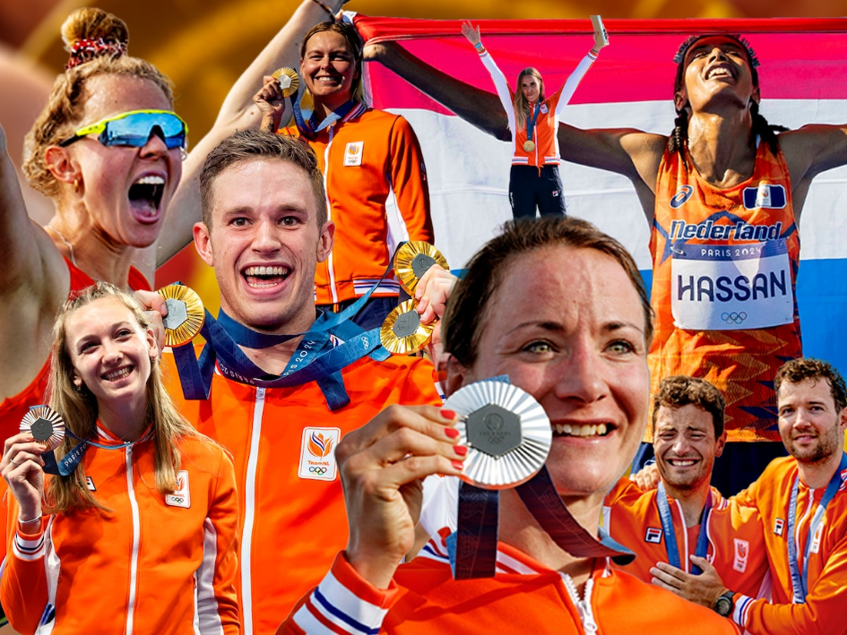
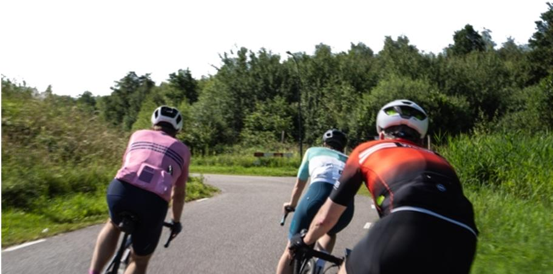
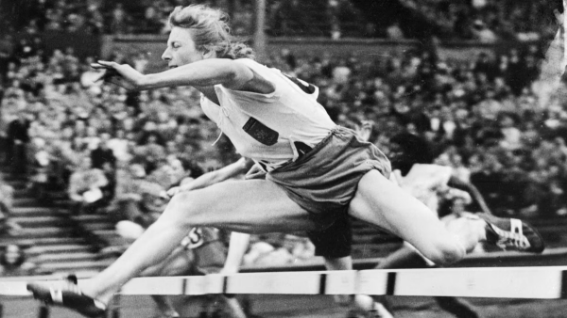
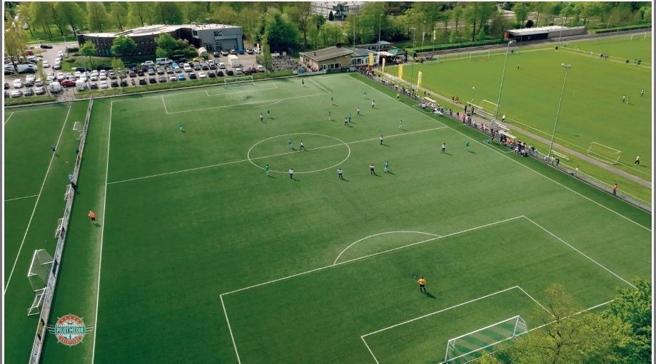
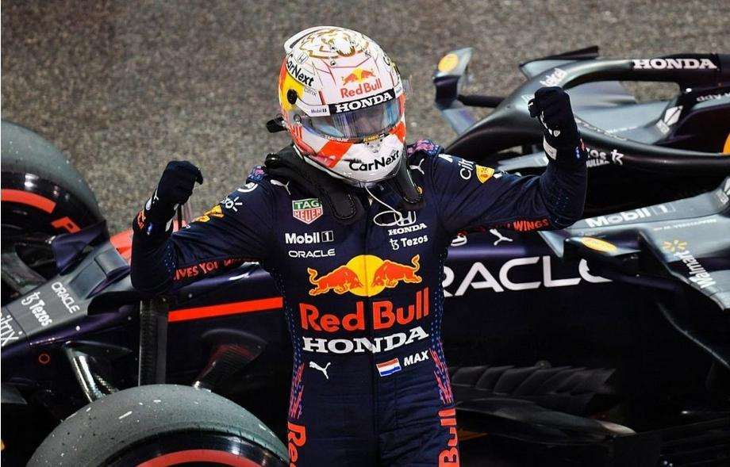
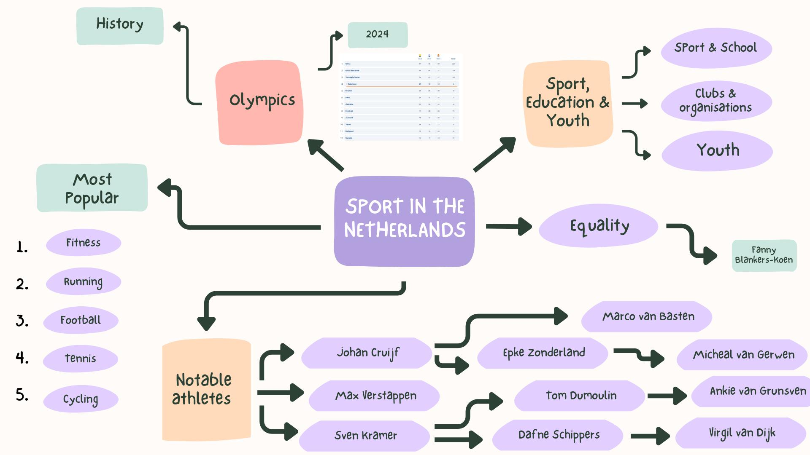

Photo 1
In this picture you can see some of the most important athletes from the Netherlands. This was a part of the Dutch olympic team from 2024. This was the year that we broke our record for most gold medals, that’s why it was a important year for us. It was a moment of joy and pride for our country. All thanks to our amazing athletes. The 1928 summer olympics were held in the Netherlands. It was the first and only olympic games (summer of winter) that took place in the Netherlands. The Netherlands first participation in the olympics was in the 1900 summer olympics. Dutch athletes have won a total of 356 medals at the summer olympics and 147 medals at the winter olympics.
Photo 2
The Netherlands is a very active country, our most common transportation method is cycling. There are more bicycles in our country than there are people. But if you really look at the sports instead of the transportation method, fitness is the biggest. More then 3 million people in our country are regularly doing different variations of fitness. Other big sports in the Netherlands are running, football, tennis and cycle racing. 62% of the Dutch population exercises weekly. Thats relatively high compared to other countries.
Photo 3
In the world of dutch sports equality is a big deal. But that hasn’t always been like that. Woman weren’t allowed to go to the olympics to represent the Netherlands because they were supposed to stay home and take care of the kids. The woman you see in this picture is responsable for a big change. Dit is Fanny Blankers-Koen, also known as the flying dutchmam, she is the first female athlete from the Netherlands to make a big impact in the olympic games. She inspired lots of woman with her performance in the 1948 olympics, where she won 4 gold medals. Nowadays woman have the same opportunities as men and they are mostly seen as equals.
Photo 4
Here you see a football game from a dutch amateur football club. Around 30% of the dutch population is a member of a sport organisation or club. This used to be a lot more but it dropped because of the corona virus and the numbers never fully recovered. De biggest amateur club in the Netherlands is SV Kampong with more then 6700 members. Sport clubs are good for the community because they bring people together and we hope that more people want to become member of a sport club or organisation.
Photo 5
In this picture you see the famous Dutch Formula One driver Max Verstappen. Max is one of the most important dutch athlete in history,, but he is definitely not the only one with that status. Athletes like Johan Cruijff, Sven Kramer, Epke Zonderland, Daphne Schippers, Anky van Grunsven and many more are very important in the dutch sport history. These athletes are part of the succes that the Netherlands is in the top 10 best performing countries when talking about sports. And we are very proud of that.
Infographic
